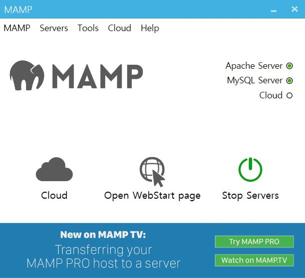
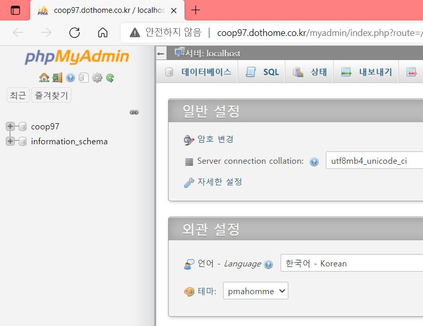
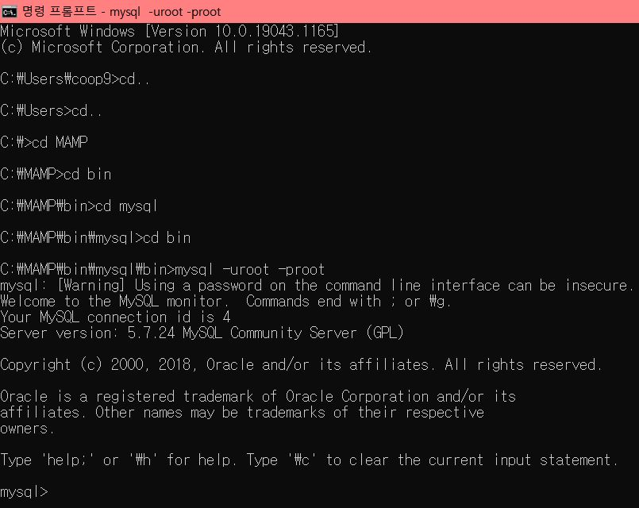

MySQL
MySQL은 데이터베이스 소프트웨어입니다. 일반적으로 데이터를 추가하거나 검색, 추출하는 기능을 모두 포함해서 데이터베이스라고 부릅니다.
"MySQL은 세계에서 가장 많이 쓰이는 오픈 소스의 관계형 데이터베이스 관리 시스템(RDBMS)입니다. MySQL은 PHP 스크립트 언어와 상호 연동이 잘 되면서 오픈소스로 개발된 무료 프로그램입니다. 그래서 홈페이지나 쇼핑몰(워드프레스, cafe24, 제로보드, 그누보드) 등 일반적으로 웹 개발에 널리 사용하고 있습니다."
MySQL 설치
MAMP 설치

1. 위의 2개의 불이 들어와야합니다.
2. 모든 방화벽 엑세스를 허용해야 합니다.
3. pro 버전은 유로버전이라서 설치하지 않아도 됩니다.
MAMP 실행
윈도우 : C:\MAMP\bin\mysql\bin
맥 : cd /Application/mamp/Library/bin
윈도우 : mysql -uroot -proot
맥 : sudo mysql -uroot -proot
윈도우
C:\MAMP\bin\mysql\bin>mysql -uroot -proot
mysql: [Warning] Using a password on the command line interface can be insecure.
Welcome to the MySQL monitor. Commands end with ; or \g.
Your MySQL connection id is 4
Server version: 5.7.24 MySQL Community Server (GPL)
Copyright (c) 2000, 2018, Oracle and/or its affiliates. All rights reserved.
Oracle is a registered trademark of Oracle Corporation and/or its
affiliates. Other names may be trademarks of their respective
owners.
Type 'help;' or '\h' for help. Type '\c' to clear the current input statement.
맥
webstoryboyhwang@Webstoryboyui-MacBookPro bin % sudo ./mysql -uroot -p
Enter password:
Welcome to the MySQL monitor. Commands end with ; or \g.
Your MySQL connection id is 383
Server version: 5.7.32 MySQL Community Server (GPL)
Copyright (c) 2000, 2020, Oracle and/or its affiliates. All rights reserved.
Oracle is a registered trademark of Oracle Corporation and/or its
affiliates. Other names may be trademarks of their respective
owners.
Type 'help;' or '\h' for help. Type '\c' to clear the current input statement.
MyAdmin
닷홈 홈페이지 - 마이닷홈 - 도메인주소로 이동 - 주소 뒤에 myadmin 입력
MySQL 경로 이동
윈도우 검색창에 '명령 프롬프트' 입력 - cd..(최상위 폴더로 이동)- C:￦>(최상위 폴더) - 뒤에 cd + 가고자 하는 경로를 하나씩 차례대로 입력 - 최종 C:\MAMP\bin\mysql\bin> (/ 또는 ￦로 나옴) - mysql -uroot -proot (아이디, 비밀번호 란 뜻) 입력